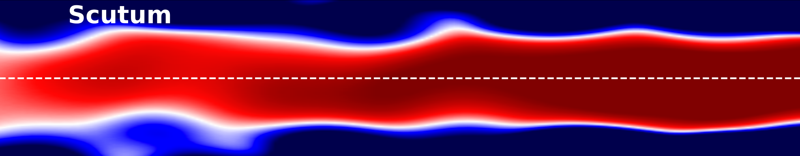

Metal-rich stellar counterpart of the Radcliffe Wave and the 3D chemical footprints of the Milky Way spiral arms
Luis Martinez-Medina, Eloisa Poggio, Elizabeth Moreno-Hilario
3D [M/H] Excess Map
Radcliffe Wave (transversal cross-section)
Radcliffe Wave (longitudinal cross-section)
Sagittarius-Carina Arm

Scutum Arm
Local Arm
Perseus Arm
![3D [M/H] Excess Map](mh_excess_3D_map_seismic.png)